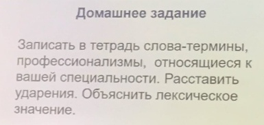
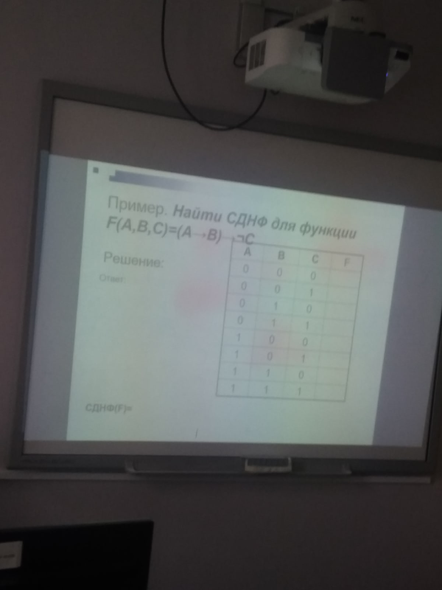

| Дата | 14 | 15 | 16 | 17 | 18 |
| День | понедельник | вторник | среда | четверг | пятница |
| 1 пара | Прикладная электроника | Прикладная электроника | Прикладная электроника/то | Основы философии | Метрология |
| дз | Подготовить сообщения(3 мин): Данилов-Сократ; Полина-Платон; Тимофеев-Аристотель. Дать определения и выучить, будет каждого спрашивать: Метофизика, Догматизм, Эклектика, Софистика, Герменевтика, Аксиология, Логика, Этика, Эстетика. |
||||
| 2 пара | то | то | вирусы и средства борьбы | электротехнические измерения | русский язык |
| дз | Минимум 10 слов |
3 пара | микро процес сорные системы | анг яз | проектирование бд/операционные сист | основы филослософии/русский язык | то |
| дз | |||||
| 4 пара | физра | цифровая схемотехника | операционные системы и среды | ||
| дз |  |